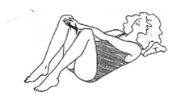

DIE RÜCKBILDUNGSGYMNASTIK
Die Rückbildungsgymnastik hat positive Effekte auf den Beckenboden, den Rücken, die Brüste und den Blutkreislauf. Desweiteren sind diese Kurse sehr wichtig um eine Blaseninkontinenz zu verhindern.
Die 8 Kurse werden von meiner Kollegin angeboten. Sie ist Yogalehrerin und hat eine zusätzliche Ausbildung in prä- und postnataler Gymnastik. Die Rückbildung wird 4-6 Wochen nach der Geburt angeboten und findet samstags morgens in Luxemburg, 45 rue des Aubépines statt.

Es ist ratsam diese Kurse alle und von Anfang an zu besuchen, da die Übungen sich steigern und nicht immer alles wiederholt werden kann.